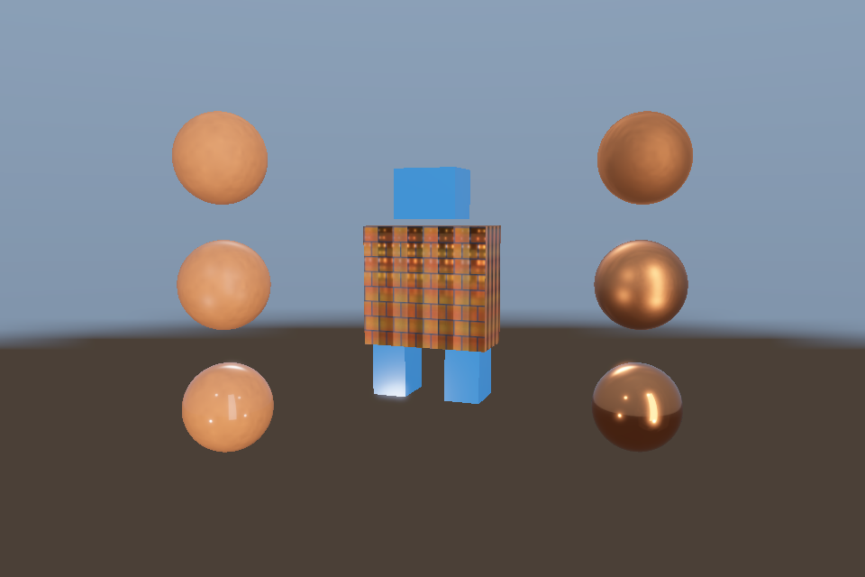

第 34 课：综合实战：PBR 模型展厅
本课独立工程与关键注释
main.cpp · 本地辅助实现 · 本课着色器 · CMakeLists.txt
本目录拥有完整课程源码、资源与依赖配方。关键步骤含中文注释，不链接其他课的课程实现。可将整个目录复制到其他位置，用以下命令单独构建和检查；第三方依赖首次配置需要联网或提供缓存。
cmake -S . -B build -A x64
cmake --build build --config Debug --parallel 4
ctest --test-dir build -C Debug --output-on-failure
课程首页 · 上一课 · 下一课
目标与运行
cmake --preset opengl
cmake --build --preset opengl-debug --target 34_gallery --parallel 4
.\OpenGL\build\bin\Debug\34_gallery.exe
预期画面：机器人模型和两列 PBR 球置于 HDR 环境中，带 Bloom；空格关闭 Bloom。
相机：W/A/S/D 移动，Q/E 升降，按住右键转向，Esc 退出。
代码阅读顺序
Model + Environment → scene HDR → bright extraction → ping/pong blur → tone output
从本课 main.cpp 进入；公共工具在 common，GLSL 在 shaders。先画出每一遍读什么、写什么，再逐个展开辅助类。
原理与实现
前面的独立示例可以分别看懂技术，综合场景则检验它们的数据约定是否一致。本课用实际 glTF 模型、材质贴图、PBR、完整 IBL、自由相机、HDR、亮度提取和 Bloom 串成一条可运行管线。
初始化阶段只做一次资产导入与 IBL 预计算。每帧先更新相机与目标尺寸，在线性 RGBA16F 场景目标中绘制模型与球，天空同样输出线性 HDR。与第 25 课不同，这里 PBR 的 displayEncode=0，不能在对象 shader 内提前 tone map/Gamma。
接着在独立 FBO 从 HDR 场景提取亮区，交替横纵模糊，再与原场景相加，最后只在 tone pass 统一曝光映射和编码。这与第 22 课的 MRT 亮区输出是两种等效组织：此处复用单颜色输出的 PBR 程序，所以增加一次全屏亮区提取。
本课不把所有高级效果硬塞到同一 shader：它没有同时集成 SSAO、透明物体、点光阴影和骨骼动画。它是一条已实现的完整模型展示管线；后续练习要求你按清晰的 pass 约定继续合并，而不是靠遗留绑定状态碰巧显示。
每一遍都明确输入纹理、目标附件、viewport、深度状态和色彩空间。若画面突然过亮，先检查是否重复 Gamma，再检查曝光和光源，不要先通过改 baseColor 掩盖流程错误。
修改练习
将机器人换成自己的 glTF；接入骨骼动画；把粒子加入 HDR 场景；选择一种阴影与 PBR 的直接光可见性结合。
修改后重新执行 cmake --build --preset opengl-debug --target 34_gallery --parallel 4。GLSL、模型、图片会复制到程序旁的 shaders/assets 目录。源文件应修改教程根目录下的版本，运行目录的副本会被下一次构建覆盖。
自测与参考答案
为什么单课 PBR 看起来正常，接入 HDR 展厅却可能变灰或过亮？
最常见原因是对象阶段已经做了显示映射，又在最终 pass 重复映射/编码，必须统一整条管线的输出约定。
检查与排错
运行 34_gallery.exe --smoke 可执行确定时间的四帧渲染检查。重要技术开关还可用 --smoke --variant --capture 与默认抓图对比。共享工具会检查 GL 错误、非背景像素和图像动态范围，但这不能代替人工核对技术含义。参见 进阶排错。
参考截图
以下为课程自带素材、固定时间 1 秒时的实际渲染；你的相机与操作改变后画面会不同。

查看按住空格时的对照图
深入学习：数据、接口与执行
综合场景适合追踪依赖，不适合初次定位所有问题。先分别验证模型、材质、IBL 与动画，再观察组合时资源绑定和状态恢复是否相互覆盖。
配套精讲：三 API 对照 · 框架与多后端架构。先读概念与参数选择，再返回本课实现核对，不必一次展开所有公共类。
本课的真实源码切片
来自 OpenGL/lessons/34_gallery/main.cpp，第 8—33 行；这是现有实现的局部摘录，末尾可能处于函数中间，不是可单独编译的完整程序。
int main(int argc, char** argv) try {
// 先创建上下文；它必须比 shader、纹理和网格活得更久。
App app(argc, argv, "34_gallery - OpenGL Course");
Environment env(app);
Model robot(asset(app, "models/robot.gltf"));
Mesh ball(sphere()), box(cube()), plane(quad(), quadIndices());
Camera camera;
camera.pos = {0, 1, 10};
camera.pitch = -6;
Shader model(app, "model.vert", "pbr.frag"), pbr(app, "advanced.vert", "pbr.frag"),
sky(app, "sky.vert", "sky.frag"), bright(app, "screen.vert", "bright.frag"),
blur(app, "screen.vert", "blur.frag"), tone(app, "screen.vert", "tone.frag");
RenderTarget scene, highlights, ping, pong;
// 每帧处理输入并绘制；GPU 对象在退出循环后按 C++ 作用域逆序释放。
while (app.begin()) {
if (app.width < 1 || app.height < 1) {
app.end();
continue;
}
camera.update(app);
scene.resize(app.width, app.height);
highlights.resize(app.width, app.height);
ping.resize(app.width, app.height);
pong.resize(app.width, app.height);
scene.bind();
glEnable(GL_DEPTH_TEST);
同主题跨 API 导航
以下是同主题参考；场景、功能完成度和版本基线可能不同，具体边界见对照章节。
先预测，再验证
组合后出错而单课正常，优先如何缩小范围？
参考推导：逐项关闭 pass 或材质功能，并检查共享状态/单元是否被覆盖；不要同时重写资产解析与渲染器。
在一次实验中只改一个因素，记录预测、实际画面/日志和原因。检查已有 smoke 是否仍通过；图形调试器里再核对本次 draw 的实际输入/输出，不能仅凭进程正常退出下结论。